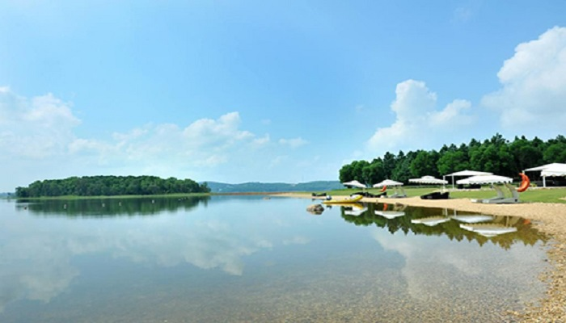
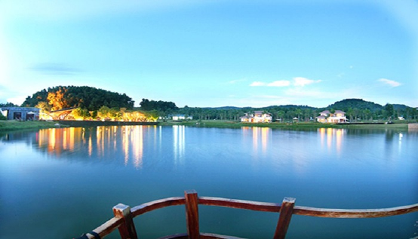
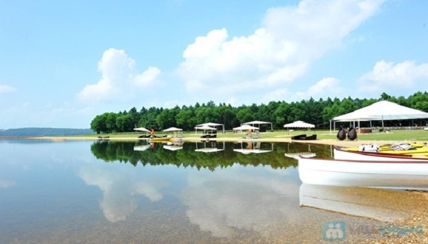

Kinh nghiệm đi du lịch hồ Đại Lải, Vĩnh Phúc
Nằm cách Hà Nội 50km về phía Bắc, Đại Lải là một hồ nước nhân tạo nhưng có vẻ đẹp tự nhiên và là nơi du lịch nghỉ dưỡng vô cùng hấp dẫn.
Đôi nét về hồ Đại Lải
Hồ Đại Lải là một hồ nước rộng 525 ha. Phía Bắc là núi Tam Đảo trùng điệp, xa xa là những cánh rừng xanh biếc ngút ngàn, xen lẫn những thung lũng tự nhiên, các triền đồi bát úp cùng các hẻm núi nhô ra tạo nên các eo, các bán đảo hoang sơ. Sự kết hợp tự nhiên giữa hồ và núi tạo nên một không gian thoáng đạt và một phong cảnh hết sức nên thơ, trữ tình.
Vào mùa mưa các con sông, suối trong lưu vực phía Nam của dãy núi Tam Đảo với sông Vực Tuyền, sông Tôn, sông Bá Hạ, suối Đồng Câu… đều dồn nước vào hồ, khiến mực nước của hồ lên cao tới 21m. Những gò đồi bát úp sát triền núi được xâu chuỗi nối dài bởi những đập đất kiên cố tại thành những bức tường thành giữ nước cho hồ.
Thời điểm đi du lịch hồ Đại Lải
Đi du lịch hồ Đại Lải vào mùa nào cũng được bởi ở đây khí hậu khá ôn hòa, mát mẻ. Do ngọn gió bấc lạnh lẽo đã được dãy núi Tam Đảo che chắn, nên nhiệt độ của khu vực này mùa hè không quá nóng chỉ trung bình 28,9 độ C, mùa đông không quá lạnh chỉ 16,8 độ C. Nhiệt độ này tạo điều kiện thuận lợi cho du khách có những kỳ nghỉ dưỡng cuối tuần thư giãn, thoải mái.
Những trải nghiệm ở hồ Đại Lải
Đến hồ Đại Lải du khách được mãn nhãn với cảnh hồ vô cùng đẹp mắt. Sau khi ngắm hồ du khách sẽ đi thuyền hoặc ca nô khám phá đảo ngọc nổi lên giữa lòng hồ. Những du khách thích sự lãng mạn có thể chọn hình thức đạp vịt ra đảo, vừa tận hưởng cảm giác thư thái giữa mênh mông sông nước, vừa có cơ hội khám phá nhiều cảnh quan kỳ thú xung quanh hồ.
Đảo Ngọc trước đây gọi là đảo chim vì nơi đây quy tụ rất nhiều loại chim từ khắp nơi tìm về làm tổ. Hiện nay đảo đã khoác trên mình một chiếc áo mới trở thành khu resort với nhiều hạng mục kiến trúc đa dạng và du lịch hấp dẫn
Sau hành trình khám phá vẻ đẹp thiên nhiên của hòn đảo xinh đẹp này, du khách có thể dừng chân vãn cảnh chùa Linh Thông nằm ngay trong khuôn viên đảo ngọc để lắng mình vào cõi hư không, tạm quên đi những sân si của cuộc đời này.
Nếu muốn tận hưởng các dịch vụ cao cấp hơn, du khách hãy đến Flamigo Đại Lải Resort hoặc Đại Lải Paradise Resort với các biệt thự nghỉ dưỡng sang trọng, hệ thống nhà hàng mang phong cách kiến trúc hiện đại, thiết kế mở, giao hòa với thiên nhiên cùng các dịch vụ vui chơi giải trí đa dạng
Đến hồ Đại Lải bạn còn có cơ hội thương thức những món ăn ngon đặc sản của núi rừng như: cơm lam, thịt lợn mán, cá nhỏ chiên giòn, gà nướng, trâu xào lá lốt…
Hãy để những tất bật của cuộc sống ở lại phía sau những trải nghiệm thú vị ở Đại Lải bạn sẽ cảm nhận được những giá trị cuộc sống và tìm về chốn bình yên, tĩnh lặng trong tâm hồn.